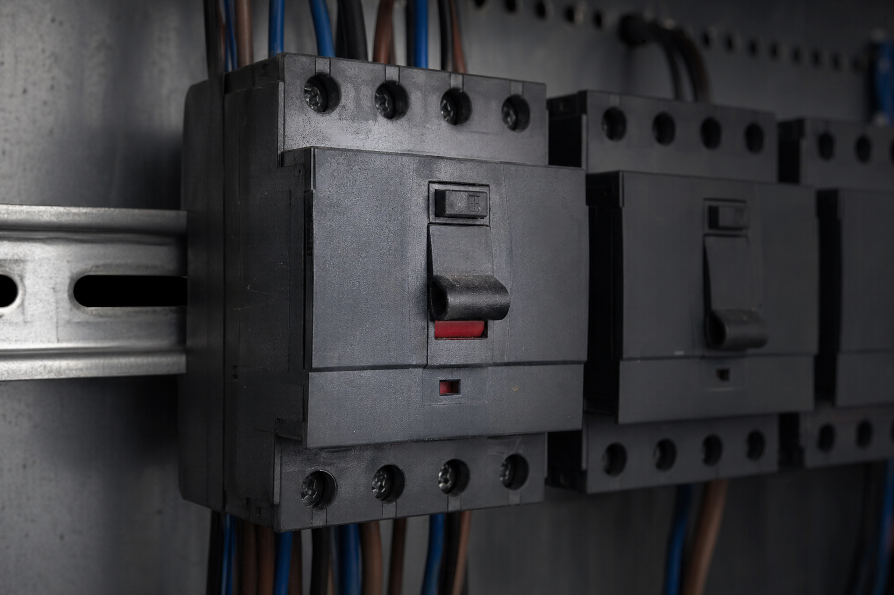
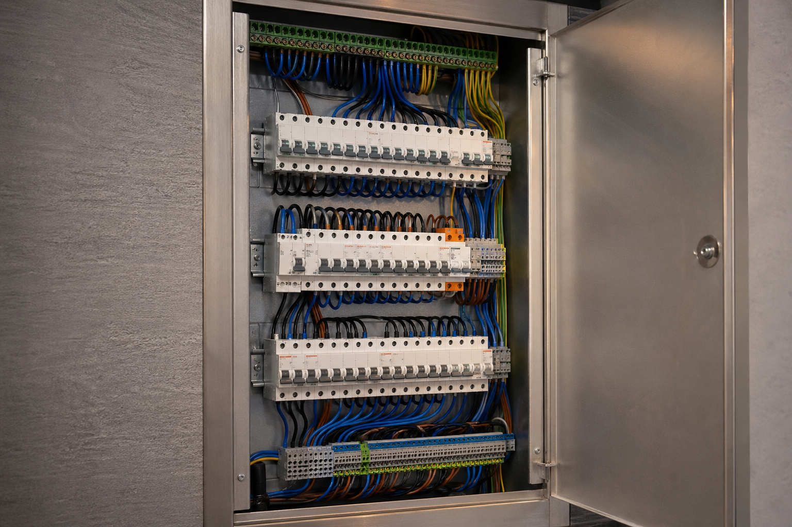
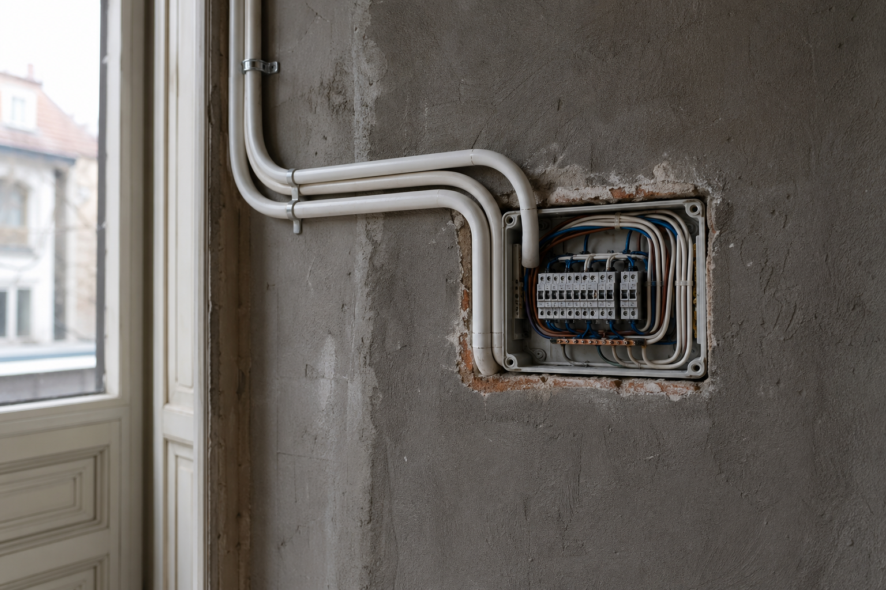
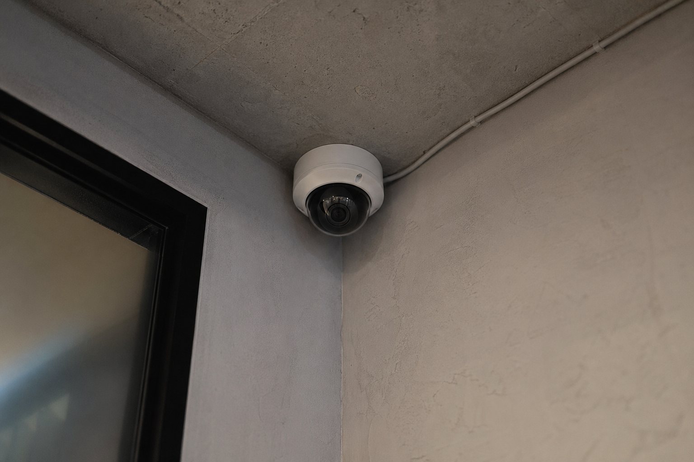
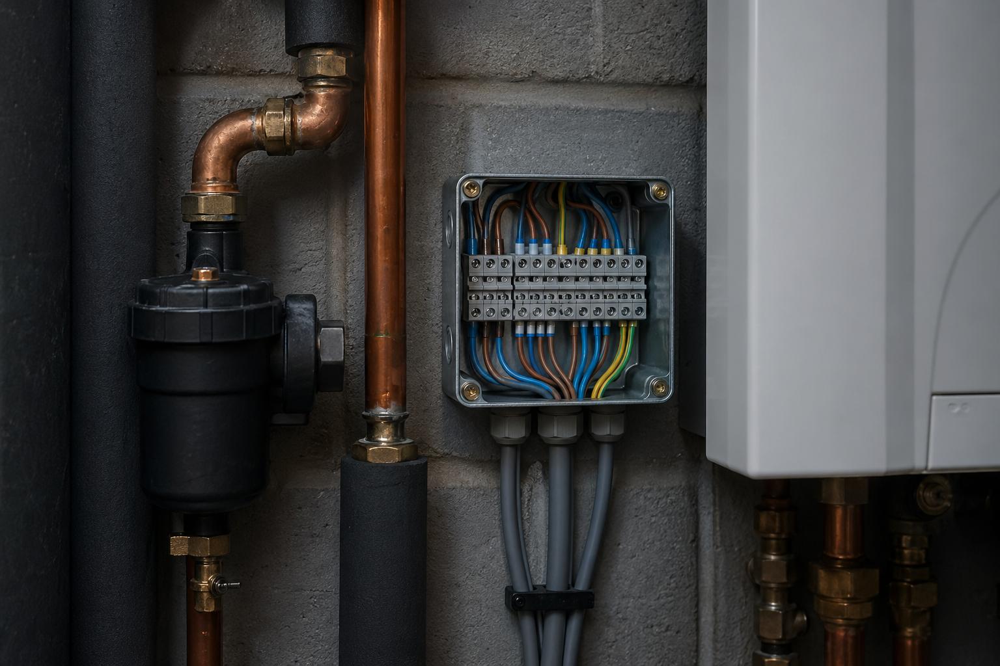

Boscolo · più di trent'anni · case, condomini, attività
Chiama l'elettricista quando saltano i salvavita, deve rifarsi il quadro o servono nuovi impianti
Siamo un'impresa elettrica Boscolo che lavora ogni giorno su case, condomini e piccole attività a Torino e in provincia: interventi urgenti sul quadro, nuove derivazioni, ristrutturazioni, automazioni (tapparelle e cancelli), impianti di sicurezza e i collegamenti elettrici legati alle caldaie quando il guasto riguarda quella parte. Ci contattate al 335 637 982, su WhatsApp o via email: spiegate il problema e concordiamo il passo successivo (spesso un sopralluogo).
- Emergenza
- Stessa linea per guasti seri anche di sera o nei festivi, quando è il caso
- Chiarezza
- Lavoro ordinato sul quadro e spiegazioni comprensibili prima di intervenire dove serve il sopralluogo
Chi siamo e come lavoriamo
Boscolo Impiantistica Torino è l'attività che trovate sulla scheda pubblica Google Maps. Operiamo nei lavori elettrici: dal ripristino in emergenza quando salta il differenziale o una linea alla sistemazione e ampliamento del quadro elettrico, alle prese comandate e motorizzazioni domestici, predisposizioni per allarme e videocamere, fino alla parte elettronica degli impianti termici quando tocca al nostro mestiere (vedere caldaie e collegamenti).
Il contatto principale è il telefono 335 637 982 (anche di notte per i guasti gravi), oppure WhatsApp e l'email assistenzacaldaiepiemonte@gmail.com per richieste scritte o preventivi. Da oltre trent'anni siamo presenti sul territorio piemontese: preferiamo capire il quadro reale dell'impianto (quando serve con foto e sopralluogo) invece di promettere tempi fissi al telefono che poi non reggono con il traffico e la coda lavori.
Cosa non facciamo: non siamo un centralino che gira la chiamata a tecnici a caso. Cosa ci aspettiamo da voi: una descrizione onesta del guasto o del lavoro e, se possibile, accesso al locale per verificare protezioni e cavi. In fattura e in cantiere teniamo un ordine visibile sul quadro: così il prossimo tecnico (anche tra anni) capisce cosa è stato fatto.
Cosa facciamo per voi a Torino e in provincia
Sotto trovate i quattro ambiti in cui interveniamo più spesso. Ogni voce apre una pagina con maggiori dettagli sul tipo di lavoro.
-
Pronto intervento
Cortocircuito, blackout in una parte di casa, differenziali che non reggono, puzza dal quadro: prima sicurezza, poi sistemiamo sul serio.
Pagina pronto intervento -
Impianti e quadri
Ristrutturazioni, nuove derivazioni (cucina, bagno, condizionatori), quadro rinnovato con cavi marcati e protezioni a posto.
Impianti elettrici Torino -
Allarmi e telecamere
Alimentazioni nuove lungo i muri, arrivo dei cavi al quadro dove servono antifurto e video.
Sicurezza e CCTV -
Parte elettrica sulla caldaia
Codici sulla scheda, linea senza tensione giusta, comandi esterni: ci occupiamo di ciò che riguarda cavi e alimentazioni, poi si integra con il termico se serve.
Assistenza caldaie
Altre richieste che ci arrivano spesso
Messa a terra, ricerca dispersioni, guasti che fanno scattare spesso il salvavita, citofono o videocitofono, sostituzione differenziali: decidiamo insieme al telefono se serve un sopralluogo e se rientra in quello che possiamo fare in sicurezza e con le norme applicabili al vostro edificio. 335 637 982
Zona · tempi · logistica
Città e provincia: dove interveniamo
Sul comune di Torino arriviamo ogni giorno: case in ristrutturazione, condomìni quando salta una linea, piccole officine sulla trifase. I tempi li diciamo in base a traffico e urgenze già in coda, non con minuti fissi da pubblicità.
Sulla Provincia di Torino (comuni fuori dall'urbano di Torino capitale) concordiamo la visita al telefono: dipendono distanza e interventi già programmati in città nella stessa giornata. Per capire come copriamo tutta la provincia senza ridurci a un solo paese, leggete la pagina Torino e provincia · Boscolo.
Portfolio visivo · esempi
Foto operative post intervento
Immagini di esempio (senza persone), create per ispirarvi al tipo di lavoro: quando avete le foto dai cantieri Boscolo si sostituiscono i file.
-

Pronto intervento sul quadro -

Impianto e quadro -

Automazioni e cavi -

Allarmi e video -

Caldaia lato elettrico -

Copertura provincia
Recensioni e posizione
Boscolo su Google Maps
Qui sotto c'è la vista della sede sulla scheda pubblica Maps di Boscolo — comoda per vedere sulla carta dov'è indicato l'ingresso e, se sono presenti, le recensioni. Per urgente resta il telefono 335 637 982.
Vista dalla scheda pubblica — aprite Maps per gli aggiornamenti.
Domande prima di chiamare
Domande frequenti
Cosa ci chiedono di solito quando qualcuno chiama dalla zona di Torino.
Lavorate sia a Torino sia in provincia?
Posso contattarvi di notte o nei festivi per un guasto?
Fate il preventivo al telefono prima del sopralluogo?
Dopo intervento fornite documentazione sull'impianto?
Collaborate con amministratori e tecnici esterni in condominio?
Come funziona il pagamento?
Linea tecnica Boscolo
Contatto diretto — Boscolo
Un solo numero per guasti e commesse: spiegate il problema e concordiamo il passo successivo.
Dettagli attività Boscolo Impiantistica Torino Tel +39 335 637 982 Email assistenzacaldaiepiemonte@gmail.com Zone Comune di Torino e Provincia di Torino (giorno e fascia concordati al telefono) Web elettricistaboscolo.it